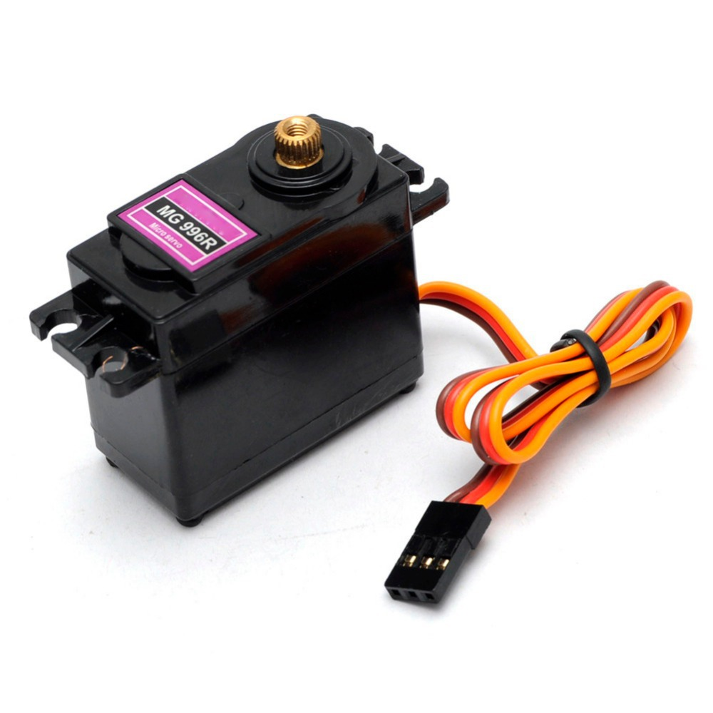
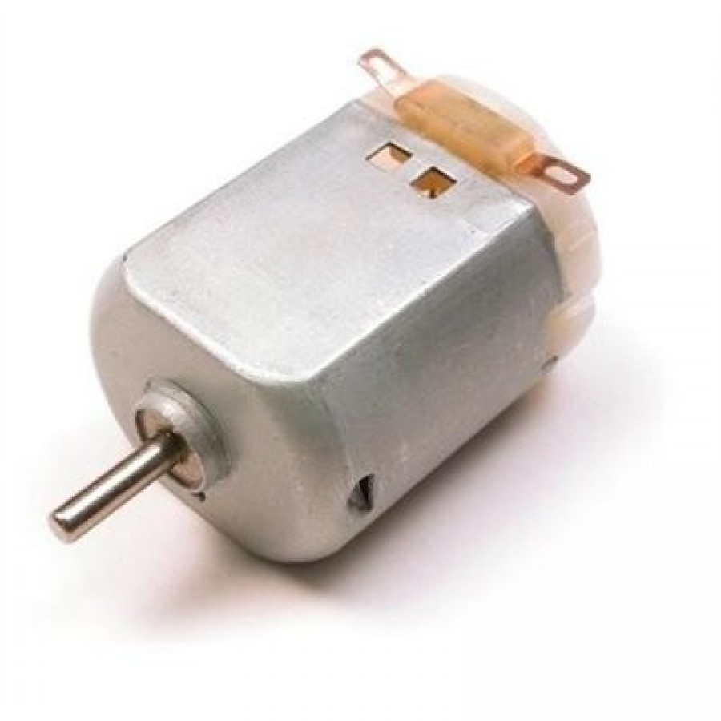
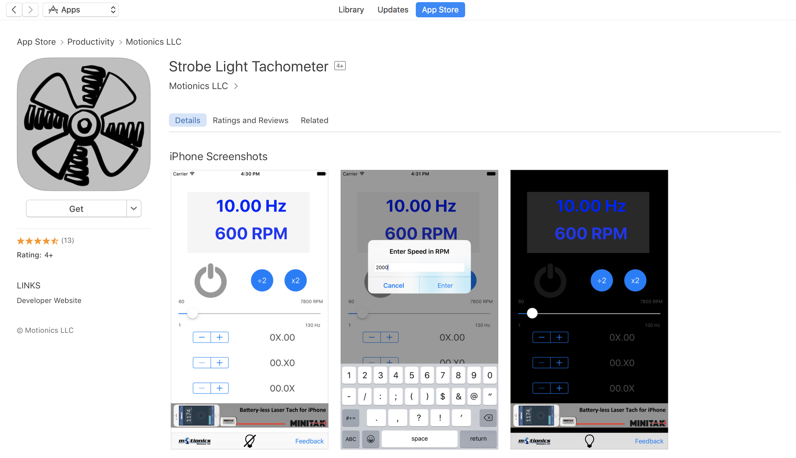
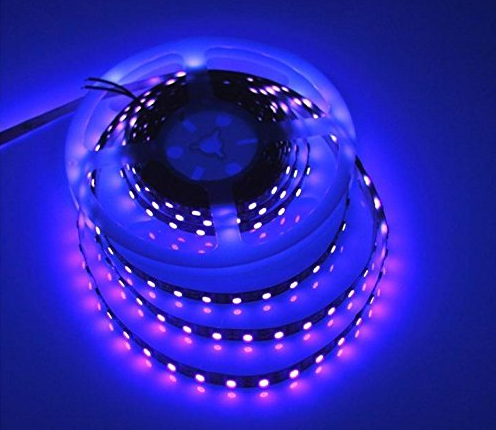
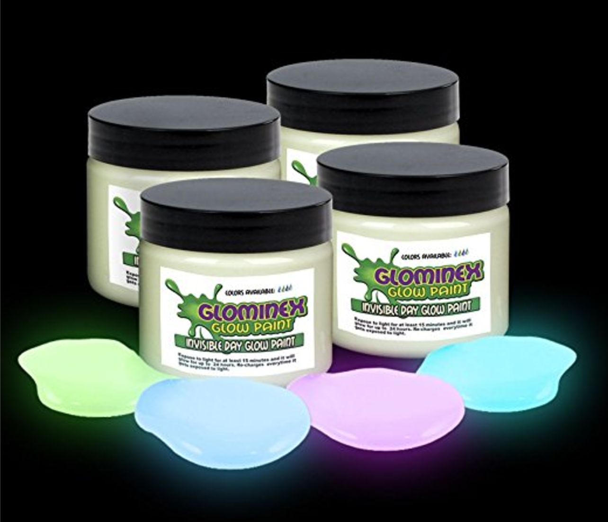
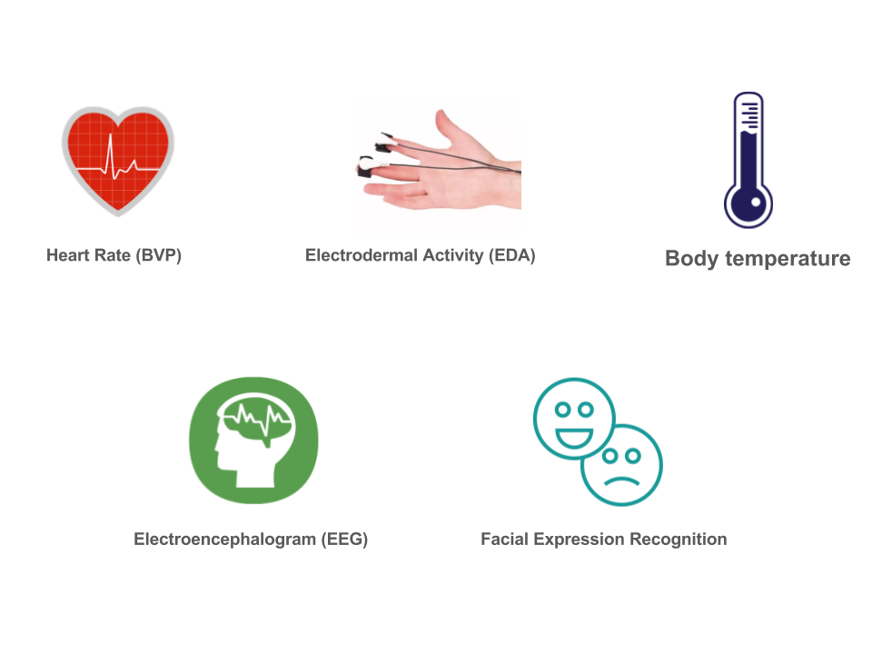
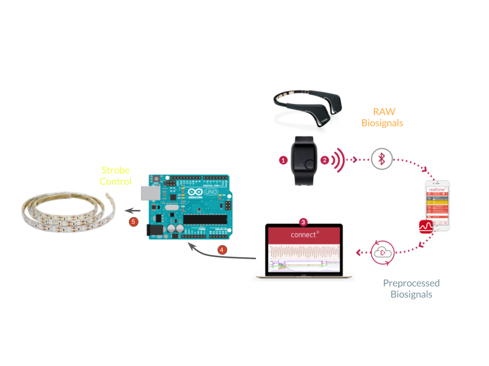
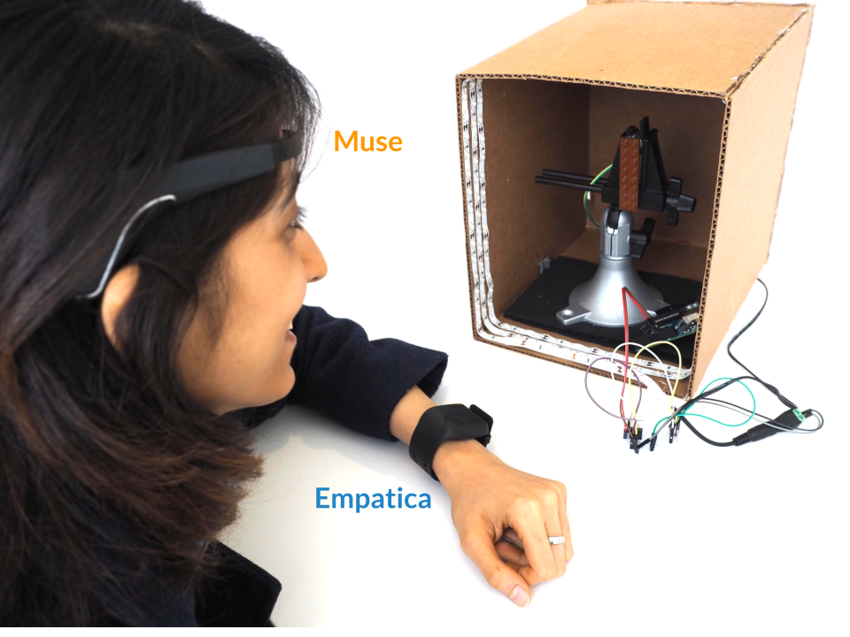

Failure
Strobe Effect
Strobe Effect
The biggest concern I had about the clock was about the strobe effect. This was because I had never used strobe lights before and I was not sure how to create the effect. I figured out that there were two big considerations in strobe effect:
- Rotational motor
- Strobe light
Motors
Initially, I used servo motors for my rotational motor because they allow control over the motors rotations. But servo motor have low rotations per minute (RPM), and even at the max speed, the rotating hand was visible to the naked eye. For strobe effect, I wanted a very fast rotating hand and so I switched to DC motors, which have ~8000 RPM. The constraint with DC motor is that DC motors do not allow fine control over the motor speed.
- 
- 
Strobe Light App
In order to test the strobe effect, I used an iPhone app that created strobe effect with the flash of iPhone. This allowed me to test the motor and strobe light effect without making our own strobe effect and thus, made sure that our tests were independent of any errors in our strobe lights. Link to App on iTunes
- 
Lessons Learned
Lessons learned from the first motor and iPhone strobe light test:
- The motor and the hand needed to be relatively stable. Extra vibrations in either the motor or the hand prevented us from creating a smooth slow motion strobe effect.
- The rotating hand had to be balanced about the center. If most of the weight was just on one side, the rotational frequency varied slightly, but that was enough to break the smooth frozen effect of the strobe light. To freeze motion using strobe light, we need the strobe frequency to be an integer multiple of the rotational frequency. If the hand was not balanced, the rotational frequency varied and thus, it was difficult to freeze motion using the strobe light.
UV strobe lights
We used a UV LED strip and covered the a part of the hand with a paint that glowed in UV light. We used UV light because we wanted the hand to only be visible/prominent when the strobing was on. With the UV-glow paint on the hand, the hand was only visible when the UV LEDs were strobing. However, the LEDs were not bright enough while strobing and we decided that our next step was to figure out a brighter light source to create the strobe effect.
- 
- 
Physiological Sensors
Empatica
Provides Heart rate, body temperature and galvanic skin response (GSR). I retrived data from Empatica in an Android app using Bluetooth Low Energy (BLE). I am mostly using GSR to detect the arousal of a person as Arousal is related to perception of time.
Muse
Muse provides electroencephalogram (EEG) data, i.e. alpha, beta, gamma, etc signals. I receive EEG data from Muse in my mobile app, in which I calculate the cognitive states of the user such as mellow, concentrated, etc.
Affectiva
Affectiva API recognized basic emotions, such as happiness, fear, anger, sadness, etc. I integrated the Affectiva API in my Android app and used the phone camera to recognize basic emotions
Sensor Data
- 
Full System
- 

- 